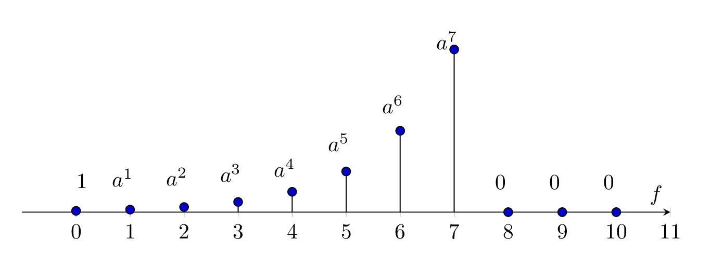

\documentclass[border={10pt}]{standalone}
\usepackage{tikz,pgfplots,filecontents,amsmath}
\pgfplotsset{compat=1.5}
\begin{document}
\begin{tikzpicture}
\begin{axis}
[%%%%%%%%%%%%%%%%%%%%%%%%%%%%%%%%%%%
height=5cm,
width=\textwidth,
axis x line=middle,
axis y line= none,
% ylabel={Signal Spectrum of $x(t)$},
every axis x label={at={(current axis.left of origin)},anchor=south west},
% every axis y label={at={(current axis.above origin)},anchor= north west},
%every axis plot post/.style={mark options={fill=black}},
% every axis plot/.append style={ultra thick},
xlabel={$f$},
% ylabel={$\boldsymbol{x[n]}$},
xtick={0,1,...,11},
ymax=150,
xmax=11,
xmin=-1,
]%%%%%%%%%%%%%%%%%%%%%%%%%%%%%%%%%%%
%\addplot+[ycomb,black,thick] table [x={n}, y={xn}] {data.dat};
\addplot+[ycomb,black] plot coordinates
{(0,1) (1,2) (2,4) (3,8) (4,16) (5,32) (6,64) (7,128) (8,0) (9,0) (10,0)};
\node[label={{$1$}}] at (axis cs:0.25,1) {};
\node[label={{$a^{1}$}}] at (axis cs:1,2) {};
\node[label={{$a^{2}$}}] at (axis cs:2,3) {};
\node[label={{$a^{3}$}}] at (axis cs:3,6) {};
\node[label={{$a^{4}$}}] at (axis cs:4,10) {};
\node[label={{$a^{5}$}}] at (axis cs:5,30) {};
\node[label={{$a^{6}$}}] at (axis cs:6,60) {};
\node[label={{$a^{7}$}}] at (axis cs:7,110) {};
\node[label={{$0$}}] at (axis cs:8,0) {};
\node[label={{$0$}}] at (axis cs:9,0) {};
\node[label={{$0$}}] at (axis cs:10,0) {};
\end{axis}
\end{tikzpicture}
\end{document}Created by David Li